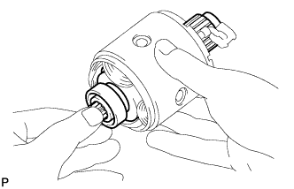
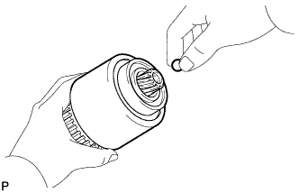
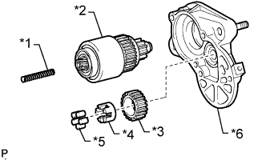
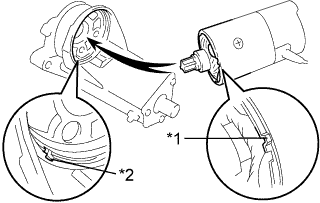
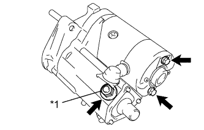

СТАРТЕР (для моделей мощностью 2,7 кВт) > ПОВТОРНАЯ СБОРКА |
| 1. УСТАНОВИТЕ ЯКОРЬ СТАРТЕРА В СБОРЕ |
|  |
| 2. УСТАНОВИТЕ ЩЕТКОДЕРЖАТЕЛЬ СТАРТЕРА В СБОРЕ |
Поместите щеткодержатель стартера на статор стартера.
 |
Установите щетки стартера на щеткодержатель стартера.
С помощью отвертки оттяните пружину.
Установите щетку в щеткодержатель.
 |
Закрепите крышку со стороны коллектора 2 винтами.
| 3. УСТАНОВИТЕ ВТЯГИВАЮЩЕЕ РЕЛЕ СТАРТЕРА В СБОРЕ |
Нанесите термостойкую консистентную смазку на стальной шарик, возвратную пружину, ролик муфты, фиксатор и промежуточную шестерню.
|  |
Вставьте стальной шарик в гнездо вала пусковой муфты.
Вставьте возвратную пружину в гнездо вала пусковой муфты.
|  |
Установите пусковую муфту, промежуточную шестерню, фиксатор и ролик муфты в корпус стартера.
| *1 | Возвратная пружина |
| *2 | Пусковая муфта |
| *3 | Промежуточная шестерня |
| *4 | Фиксатор |
| *5 | Ролик муфты |
| *6 | Корпус стартера |
 |
Закрепите втягивающее реле стартера 3 болтами.
| 4. УСТАНОВИТЕ СТАТОР СТАРТЕРА В СБОРЕ |
Установите фетровый сальник на якорь стартера.
|  |
Совместите захват статора стартера с канавкой втягивающего реле стартера и установите статор стартера на втягивающее реле.
Установите статор стартера на втягивающее реле стартера.
| *1 | Захват |
| *2 | Канавка |
|  |
Вверните 2 стяжных болта.
Подсоедините вывод к контакту C и закрепите его гайкой.
| *1 | Контакт C |